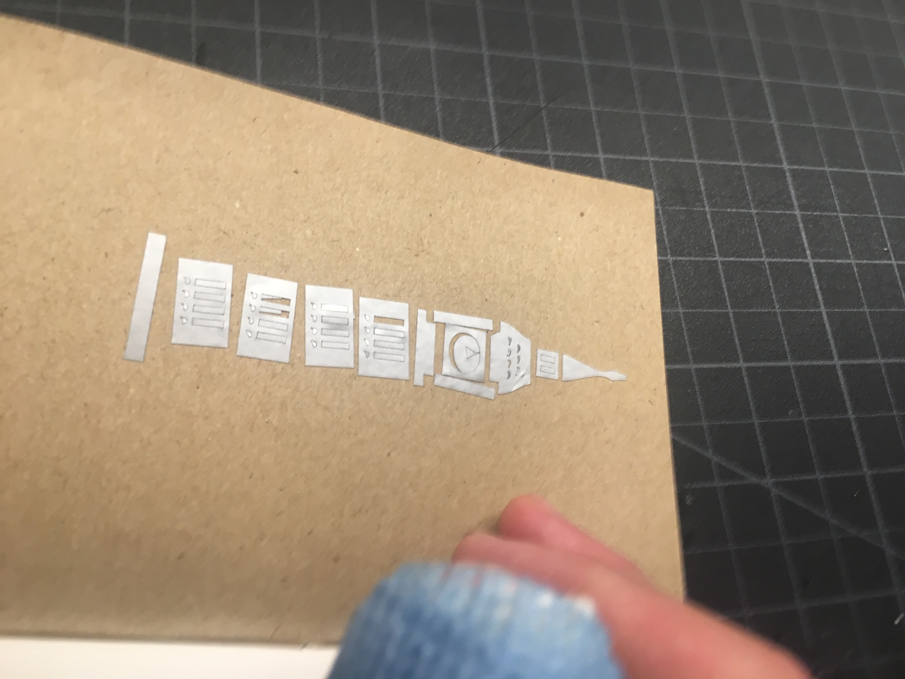
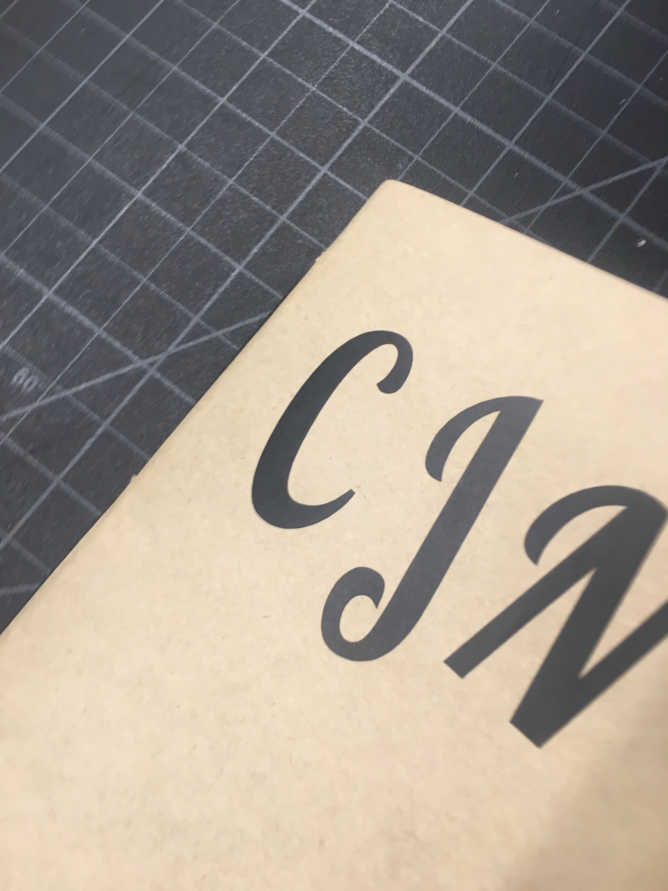
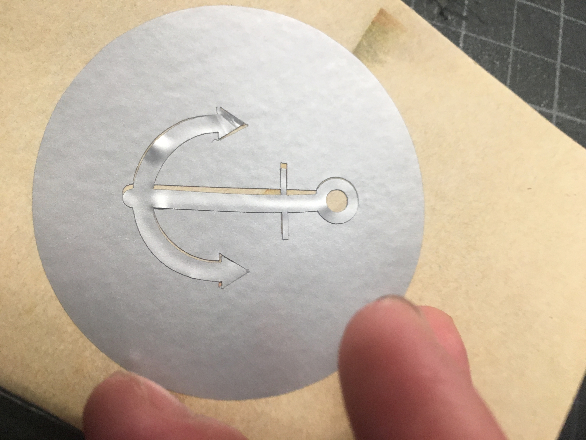
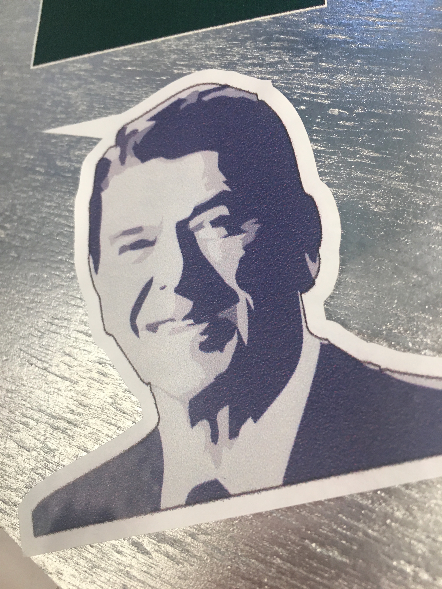
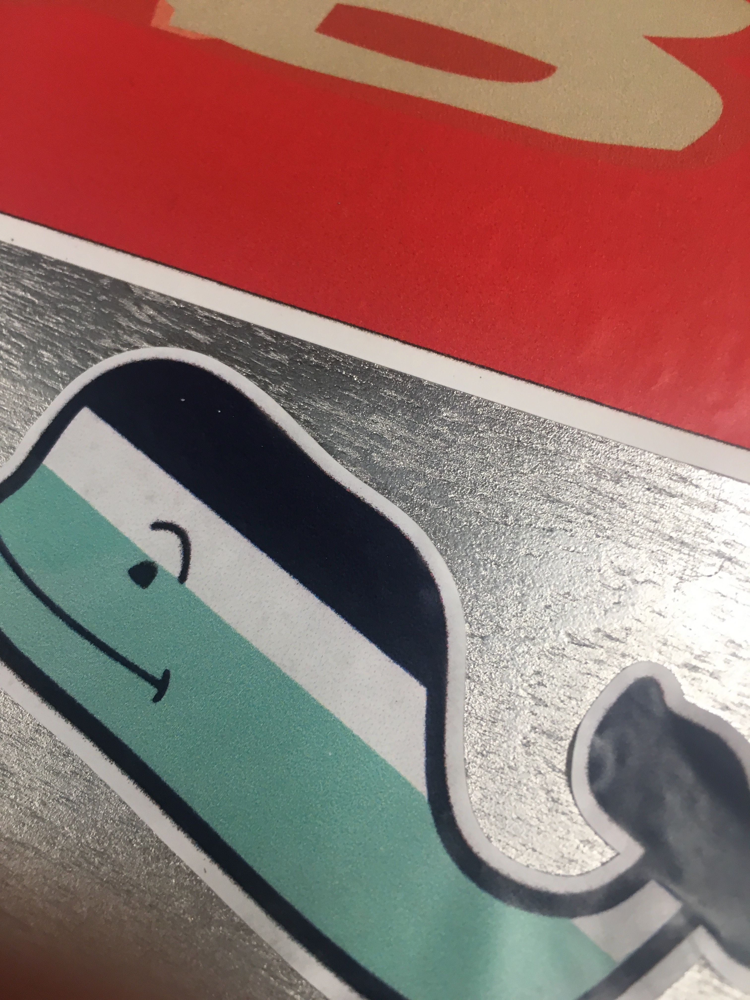
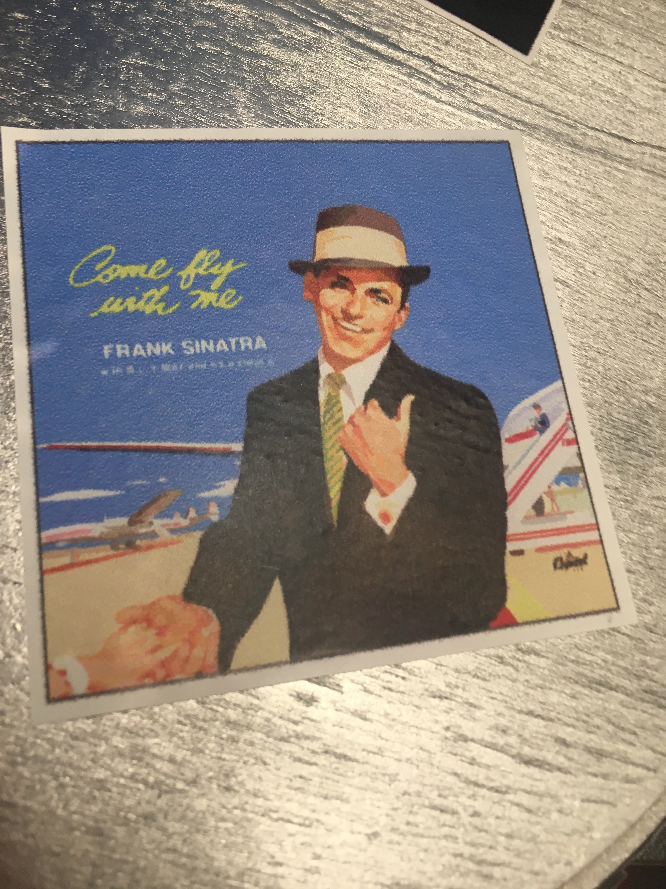
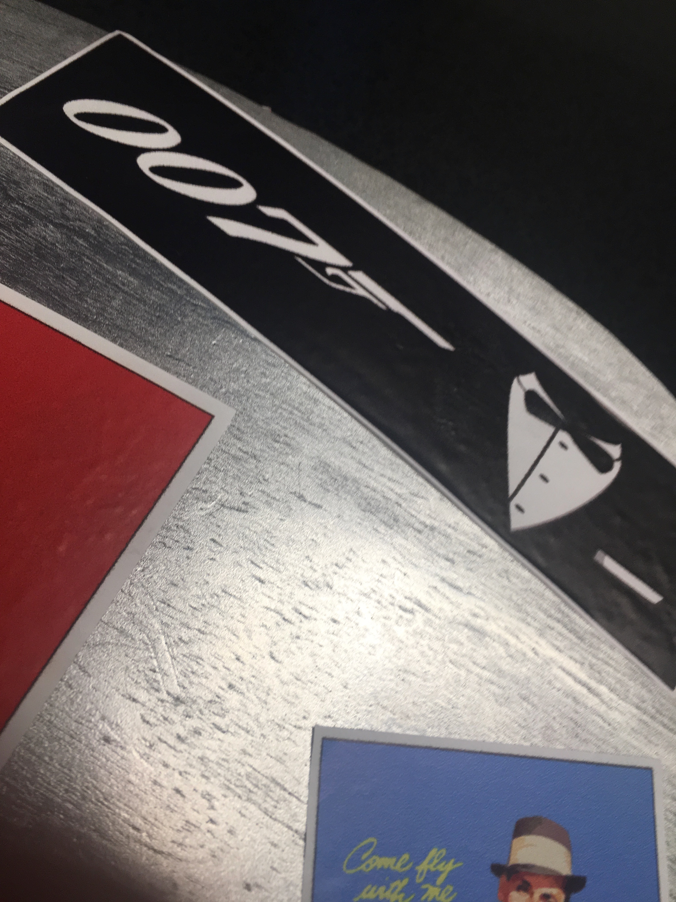
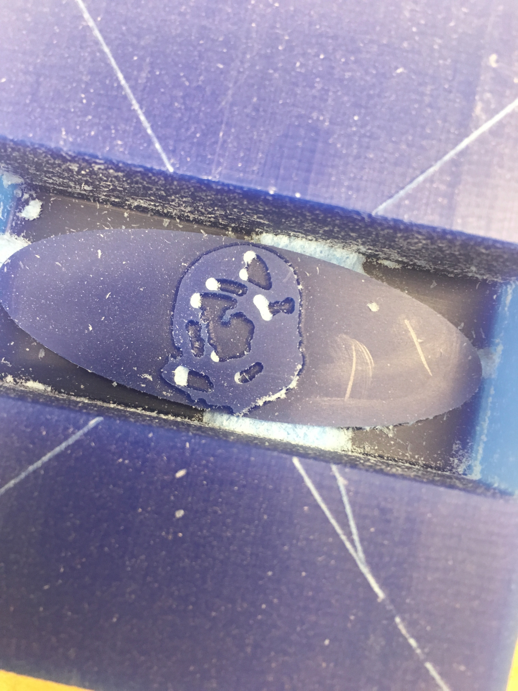
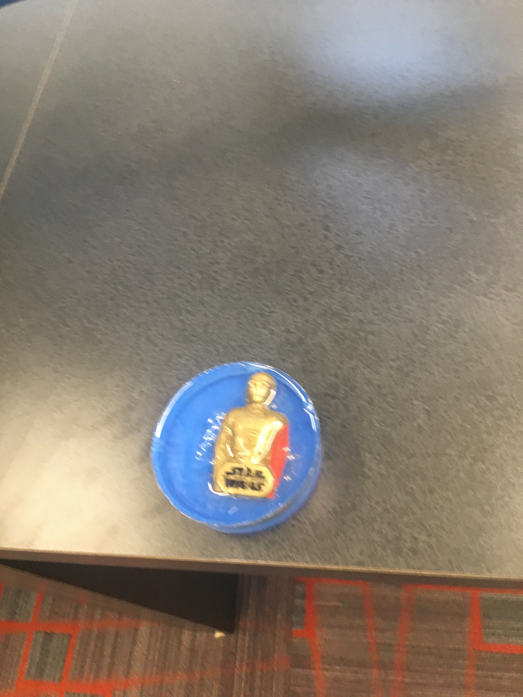

I designed three vinyl stickers on corel draw using JPGs and then I sent them to the vinyl printer where I adjusted the sticker sheet. Here they are in my sticker book:.
  I used JPGs off google, and I then ungrouped, traced a detailed logo and contoured them, exporting them to be eps files. I sent them to Roland VersaWorks and ended up putting them on my skateboard. Here are a few:
   Step 1:After doing some extensive research, I found a stock image of an astronaut which I made into an stl, and sent it to the MDX40A. Here it is.
I first found a super cool C3P0 figre in my cereal box, and then pouring the urethane in to a container I let it set. I then put in C3P0 in the container and poured two layers of epoxy in, and used a wooden stick to keep C3 from floating up though that didn't work. It came out pretty cool though, here it is:
